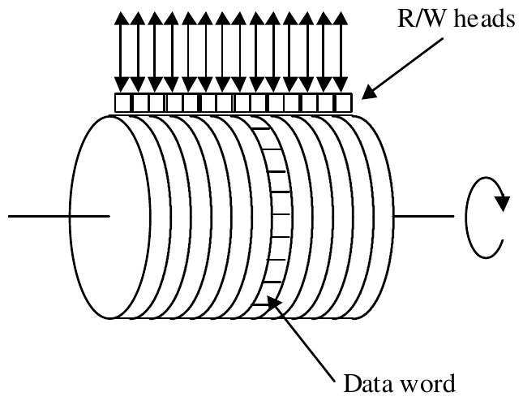

The Twentieth Annual ACM International Collegiate Programming Contest Finals · Problem D
Many years ago the “primary memory” of most computer systems was a magnetic drum. Read/write heads were placed so they could access data from the magnetic outer surface as the drum rotated along its horizontal axis. The following illustration gives the basic idea:

As the drum rotated, the data word under the read/write head(s) could be accessed. The drum continued to rotate after an instruction was fetched. After the execution of an instruction, the word ready to be accessed by the read/write head(s) was typically many addresses away. To minimize the delay that would occur if instructions to be executed sequentially were placed in sequential addresses on the drum, designers of these machines frequently included the next instruction’s drum address as a field in the instruction (that is, each instruction included an explicit “next instruction” address). Then “optimizing” assemblers could fill in the next instruction field with the address of the first available word ready to be read by the drum as soon as the current instruction was completed.
In this problem we want to determine the average execution time of simple programs without loops. We will consider only a single read/write head on a single track. Assume that the locations on that track are sequentially numbered 1 through n (where n is an input data item). All instructions require the same length of time to execute, specifically the same time as it takes the drum to rotate past t (an input data item) words. t does not include the time to read the instruction from the drum, nor does it include the additional rotational delay that might be required if the next instruction isn’t at the “optimum” address. These factors must, however, be included in calculating the average execution time.
There are three types of instructions: terminal, conditional and unconditional. Terminal instructions don’t have a “next instruction” address, since they terminate the execution of a program. Conditional instructions have two “next instruction” addresses, and unconditional instructions have only one “next instruction” address. For simplicity, we will assume equal probability of taking each branch in a conditional instruction.
The input consists of a number of test cases. The input for each test case begins with a line containing integer values for n (1 < n < 50) and t (0 < t < n), separated by a space. This line is followed by a sequence of lines containing integers giving instruction addresses, opcodes, and branch addresses. Specifically, for each instruction there is a location (between 1 and n), a number of “next instruction” addresses (0 for terminal instruction, 1 for unconditional instruction, and 2 for conditional instruction), and that many branch addresses. The last instruction is followed by 0 on a line by itself. The input set is terminated by values of 0 for both n and t.
For each test case, display the case number (they are numbered sequentially starting with 1) and the average execution time for the program, expressed in units of words.
10 5 1 0 0 10 5 1 1 6 6 0 0 10 5 1 1 7 7 0 0 10 5 1 2 7 8 7 0 8 0 0 10 6 8 0 7 1 3 3 0 1 2 7 8 0 0 0
Case 1. Execution time = 6.0000 words Case 2. Execution time = 21.0000 words Case 3. Execution time = 12.0000 words Case 4. Execution time = 12.5000 words Case 5. Execution time = 26.5000 words